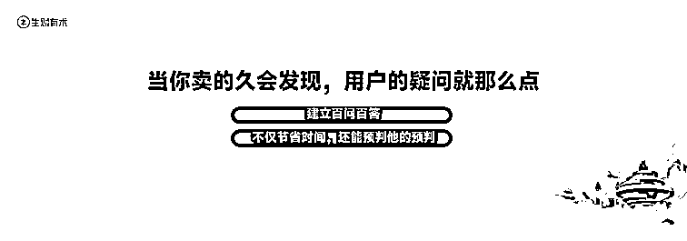

来源：https://ivqd5pmg5of.feishu.cn/docx/LPBMdXacgoti8pxLsHRcFd5QnBc
梁靠谱
生财第五期圈友
第七、八期418拉新第一名
销冠孵化基地主理人
自媒体营销顾问
各位山东老乡，大家好，我是梁靠谱。我的学员都说，梁靠谱是一个打榜打着打着，就打成了副标题的人。前段时间还有人问我说靠谱，我怎么样才能得销冠？我说，等我回家生孩子的时候，你来刷一刷，试一试。
对于销售和营销这件事情，我真的是很喜欢，大家知道我的主业是在医院工作，现在还没有离职，我喜欢医学喜欢到什么程度？我在做梦的时候都在救人，我做梦会梦到大家旁边突然躺了一个人，我就马上让旁边的人赶紧打120，然后我就看他的呼吸和心跳，去看他的瞳孔，我在梦里面就定位出来他是脑出血，并且是哪个功能区，我醒了还在这个复盘，我说是真的吗？我说有没有人需要抢救？
我在来生财的第一年，也就是2021年的时候就发过一个帖子，叫不疯魔不成活。就是少一天，少一个月，都不是一辈子。一直到现在我在销售这件事情上已经有上万个c端的学员，也有了上百个企业，就包括新东方、爱尔建，还有正大天晴，都是我的甲方爸爸。现在我自己又自创了很多的营销体系，比如说靠谱成交五步法，点线面体、痛点、痒点、爽点等等的体系。今天来的小伙伴放学别走，今天晚上夜话的时候一人发一套课。
我的学员曾经问过我，跟我讨论了一个人生课题，大家也可以想一想。他说靠谱，你觉得人生最难的事情是什么？当时一下给我问住了，我说，我觉得在手拿铁锤的人看来世界就是一个钉子，我觉得没有什么难的事情。然后我就去问了一下deepseek，deepseek就给出了这些选题：实现平静、原谅他人，然后面对死亡，我看完了以后，我说这不就挣钱嘛？你要挣到了钱，你生活也能平衡了，你也可以爱人了，你也有钱学习了。所以挣钱的前提是什么？要有现金流，要有一个产品，有一个买方和一个卖方。
我做销售的时候，我师父就跟我讲，世界上最难的两件事情，第一是把你的想法放在别人的脑袋里，第二是让他把口袋里面的钱掏出来放在你的口袋里。你说什么事情能够同时去实现这两件事情？我觉得就是销售，今天我们会用40分钟的时间去讨论一下私域成交，还有高客单价成交的道法术器，这个也是我第一次分享这个体系，就是特别为咱们圈友准备的。
那么私域成交之道是什么呢？我喜欢读金庸，我曾经看过一个投票，在投金庸笔下最有魅力的女性角色是谁？结果投出来的是赵敏和黄蓉，你们有没有想过为什么不是小昭或者是阿珠？这两个也非常有奉献精神，奉献到不介意自己的老公娶小老婆，奉献到连命都没有了，但是还是没有排到第一。因为赵敏和黄蓉是现在很流行的一个点，叫做引导型恋人，会有独特的智慧。
如果说你用IP去带营销，很重要的一个点就叫做专家型销售+知音型销售，专家+知音是什么意思？我希望所有人都能够把《致橡树》背下来，就是我不做攀附的凌霄花，而是做一棵跟你在一起的树。
举两个例子，第一个是我有个学员，他在广州做办公室装修，还有一个是做海南的企业财税，这种就是代记账的，他以前的销售都会问，老板你想好了吗？然后明天问老板，你看今天的云挺不错的，你要不要签单子？你看，传统行业的销售总是这样，总是期待业绩就像一场入室抢劫的这种爱情，或者他自己本身就是入室抢劫。
我说，你应该怎么样去营销呀？比如说，你给老板去看办公室的装修和办公室里面的一些装饰，你应该去插点那些非常牛、非常出名的老板，他们的办公室是怎么装的？你应该去拆解那些电视剧，比如说《商道》《鸡毛飞上天》。比如说浙商他们要这样子去布局，这样的布局风水好在哪里？这样的布局，可以让来公司的那些老板觉得他很有品类，或者是甚至是有一些布局让人天然不会有戒备心，更容易去签单子。
我说，你去招一个做国学的老师，他的这个理论体系或者是他的服务，每一个老板你都给他看看八字，然后按照他的八字喜神去布置他办公室的装修，甚至是可以给他一些建议，说他可以跟什么属相的员工去合作。马上一平米的价格就翻圈了。然后比如说财税，你也不要天天问，说老板，我们在计量一年用你六千八千，而是你要去分析为什么某娅和某曲会有财税的风险，以及金税五期之后，各个体量的老板应该怎么样去做策略？这个叫什么？这个就叫做专家型销售。我不是你的服务方，而是我在一个绝对有高度的经验上给你一些建议。
那么如果说我们全都是这种经验，或者是都是这种专家，让老板的ego变高怎么办？这个时候我们就要一个百炼钢和绕指柔，要用知音去融合，或者是去中和这种比较有强势的压迫。很多的时候我都会教我的客户，给他们的甲方提供情绪价值。比如说，我觉得你这样特别有能力的老板，你一定要把这个业务做得好，这个时候我们市场就是良币驱逐劣币。我说，一定是这个世界感谢愿意去创业的人，我觉得你们是能够改变世界的，这个就叫做什么？叫做我懂你，我能帮你。你想想那些有魅力的角色，是不是都满足了所有老板的这种期待？
所以首先第一点是背《致橡树》，然后我会觉得很重要的一个点，我们卖东西谁卖是非常不一样的。为什么每年推生财的时候，有的人一个人当打几把的人，有的人一个都卖不出去？说，哎呀，我怎么七大姑八大姨都不买生财呢？因为谁卖是很重要的。孟子有云，易子而教。
为什么现在我们这一代人很叛逆？会听自媒体博主的话，不会听父母的话。为什么郭德纲和于谦要互相去教对方的儿子？就是因为谁说这个话是非常重要的。给大家举个例子，比如说职场博主，第一个人说怎么样提高情商？但另一个人说，我体制内上班20年的这个案例。大家觉得这个a博主和b博主哪个标题会更火？这个点赞立马就差出来几百倍，对不对？比如说，健康博主现在不是回来喊你减肥嘛？如果你正常说减肥的这个话题，可能就是几个点赞，但是如果你说中科院的专家或者是哪一个明星让你去这样减肥，这个帖子一下就火了。
谁说话很重要，我们说出来混，人设都是自己给的。为什么时代的眼泪，前些年那个卖茶的小姐姐是特别火，当时我记得我身边有个人，盒饭都不舍得吃带肉的，一下子就给这个卖茶女刷了几万块钱的茶叶，背后可能其实都是彪形大汉。

现在很多娱乐主播下播了，之后也是运营去替他们跟榜一大哥聊天。当时有一个人设的角色让男人产生了保护欲，他们就会把这个钱花在这个保护欲上。卖东西，IP最重要的一个点就是谁在卖这个东西？我凭什么？比如说像我自己现在做销售培训的，为什么会做这个？因为我最开始的几年做微商，当时每一个季度，每一年都是全国的前几，然后我就以一个销冠的身份去培养其他人销冠。比如说我们说为什么卖？现在大家看到那种助农的直播间就会比其他的直播间卖得更好，甚至是阿拉泰苹果还多出来一块钱一斤，就是因为他掌握了这个道。我们说古代王朝的倾覆都要有一个得道多助、失道寡助的这种理由，那我们现在卖东西也要有一个正当的理由，比如说，什么拯救了你，我就拯救了世界。
我有很多的学员，比如他是抑郁自救，现在他愿意把他这个方法分享出来。一篇个人品牌出道文可能就能带非常非常多的单子。大家一定要把自己的这种人设给做好，包括你的战绩可查，你的故事。
所以大家有的时候看到生财一些帖子，有一些帖子就是单单是告诉你这个方法论，那可能你是只看方法论，你不会去传播。但是如果这个人里面又有方法论，又有故事，他的点赞可能就会在500赞，甚至是1000赞以上。我自己对生财其实印象最深刻的，还是好几年以前木易发的帖子：绑着炸弹做淘宝（生财帖链接：https://t.zsxq.com/0fhb2）。他说跟圈友借钱，抵押自己的龙珠，但是圈友没有要，给他发了几千块钱的红包。
这件事情其实我一直都是特别记得的，因为道理让人这个信服，故事让人相信，或者是让人铭记。人设一换价值千万，给大家举几个例子，个人品牌三部曲，第一是商业定位，也就是我是做什么？给谁解决什么样的问题？卖一个什么样的产品？收多少钱？这个是商业定位，但是大家如果商业定位都一样的情况下，你怎么样能够做到被人家记住呢？比如说大家都卖车，但是你偏偏记住了雷布斯，他是武大的，他跟初恋结婚，然后他减肥，他樱花树下什么站。你记得他很多其它的事情，所以你们的差异点不会差在这个商业定位上，就有很多人为了差异化而把自己的商业定位搞得很散，或者是搞得非常的融合，以至于别人都记不住。
那我们记住的是什么？我们记住的是他的身份，他的故事，还有他长成什么样子？比如说，都是两个儿科医生，一个儿科医生是一个中年女性二胎宝妈。别人就会觉得，你跟我同样都是妈妈，是不是你就能够共情到我的身份？那另一个医生是一个满头白发的老爷爷，会觉得他看了一辈子的病，是不是一定能把我看好？这就是人设的差别。
我之前有一个b端的老板，是做高端护肤品的一个创始人、一个股东，他也会去晒生活，我说你得晒呀，他晒的都是什么？晒的都是汽车改造、飞机模型？晒这些东西。然后我说老板你是不是脑子有泡？你的客户都是谁呀？小姐姐，谁愿意看你这个东西？改成什么？改成女儿奴，改成怕老婆，改成在家里给老婆做美甲，改成算上你们家狗，你的家庭地位排老四，改成你在家里各种给自己的老婆研发变美的小技巧，马上流量就会以成千倍的速度猛增。
为什么？因为小姐姐之间都会互相传播，或者互相转发，说你看他老婆也在用他这个东西，肯定好，然后还会转给自己的老公，说你看看人家吧。这个时代只要你会给女性提供情绪价值，那你就来财。人前霸道总裁，人后给孩子拉马骑，这个反差感拉满了，这样的人设才会有讨论度，对不对？
包括洗发水，我们之前有策划过一个洗发水的活动，是如果你买了这款洗发水，并且你老公给你洗头，然后你把这个照片打卡之后，我们会送你一个护发素，我当时就是一个私域的活动，单品打爆了800万的营业额。
为什么？因为很多的人他都想晒，你给了他一个晒的理由，一个契机、一个模板，但凡他晒了之后你就会有相当多的业绩，是不是这个道理？所以人设非常重要，我不相信每一个人没有独特之处，哪怕他在单位，特别是擅长给别人介绍对象，我也会觉得时间花在哪里，结果就出在哪里。
下一部分说私域成单方法，就是大家具体谈单会遇到的问题是什么？不知道怎么卖。我给你们先举个例子，比如说我们有一款恒温的杯子，一般人介绍这个杯肯定是介绍我们的外观好看，我们的材料是跟火箭是一样的，然后我们的有什么18项专利，有多少的专家在推荐，然后一问多少钱？300多，然后别人说哎呦，这么贵，谁会花这个钱买一个杯子？然后就走了。但是人家卖的是什么？卖的是故事。
先说我们家孩子几岁了，然后有问在座的各位，有多少人是家长的，请举手。然后就讲了一个故事，说我们家孩子小的时候，正好我们是创业的初期，我和我老婆都特别忙，孩子都交给父母去看，有一天孩子不小心就把水打翻了，就烫了手，哭得撕心裂肺，父母也特别内疚，觉得看孩子没有看好。父母就特别担心，说小孩会不会留疤痕，会不会影响他当飞行员，长大了之后会不会怨我们呀？植皮多少钱呀？这个时候我们在想，会不会有一款恒温的杯子，让这个孩子以后再也不受这种伤害，让家庭再也不受这种折磨，让夫妻两个创业的时候能够更加安心，不担心。经过多长时间的研究，发明了这款杯子，不管是多少度的水，倒进去马上就能变成45度，比如说适合爱的温度，冲奶粉什么都可以。然后这款杯子只要不是贵的离谱，没有人管它是什么材料，没有人管它是什么样的专利，然后就买了，对不对？靠谱自创的这个，回头给大家发一套小鹅通，晚上夜话的时候给你们发。
我有一个客户，他是做酒的供应商，然后别人卖酒都是酒的工艺，都是这个酒有卖出去多少瓶。大家有没有喜欢赵丽颖，她那个《风吹半夏。》是不是得了好多奖？她为什么叫半夏？因为他妈妈生他的时候难产没了，然后他爸爸是中医，说生半夏有毒，就把她妈妈克死了。
当时我们公司也是一样的，说是一个男孩子谈了个对象。然后这个对象的爸爸始终不同意，终于有一天松口了，说你来家里面一趟吧。男生就带两个酒，然后俩人就喝这个酒，喝完了之后就讲说，她妈妈生胎的时候难产，然后我一直也很怕她结婚生子，总觉得她在生孩子的时候可能，女儿她就会离开我，说完了之后声泪俱下，老泪纵横，说，我不是不满意你，其实是我不满意自己。男孩子就说，你放心，现在的医学很发达，如果真的很担心的话，我娶的不是一个子宫，是一个老婆，我可以不要孩子，但是我只要她，然后这个爸爸也放心了，过了几年之后生了孩子，母子平安，在一起团圆的时候喝的还是这个酒。
这个酒真的卖得很好，大家想一想，痛点就是没媳妇。痒点是想娶媳妇，爽点就是娶到了媳妇，卖点就是一瓶酒。不光是给酒鬼喝的，更多的是承载了人的情感，承载了人的故事，甚至是人生。前天我去爬了泰山，古来圣贤皆寂寞，没有赢者留其名。其实很多的产品承载的都是人本身的感情和诉求，如果你能够描述出来，你这个东西真的会卖得很好，因为马斯洛需求理论里面说的，情感就是人的顶级需求。
我在东北长大，在天津上大学，语言的bug可能就拉满了。下一个故事叫做卖保险不如卖伦理。很多的人就天天卖年金险，就说投货膨胀啦，央行利息多少钱？年金险给你做到2.3、2.5，不会有3.0以上的。但是我就会觉得卖保险不如卖伦理。比如说人生遇到的抉择。我喜欢一个人，ta是我的未婚夫/未婚妻，ta家有遗传病，我不太确定ta会不会有一天也发病了，那我要不要和ta结婚？这个时候大家马上就点进来看，说要不要？ta怎么样了？甚至有很多小姐姐甚至是女拳拿着四十米的砍刀又进来了，说你要是敢跟ta分手，今天我就骂死你，我在这站起来我就喷死你。进来了之后发现人家说的是什么？人家说的是疾病的发病是30%的基因加70%的生活习惯，我们两个人如果情比金坚就不会发病。而且如果因为我们为了防止发病而很健康的生活，也许我们整个发病率也会很低，这一辈子能活得很好。
就算是发病，我们提前买好了保险，针对于这个疾病的百万医疗，针对于这个疾病的重疾，还有如果说真的早走了，给孩子会留点什么，我们要把这样的保险给别人一看，这个保险确实承载的是爱、是责任......那流量也很大，精准的询单也很多。同理，相亲相到了一个各方面都很满意的男孩子，他父母没有养老保险怎么办？姐姐这一看，姐姐就劝她了，说这么好的男孩子，如果他父母还能给助力的话，就轮不到你这了，就去找女明星了，你有没有想过？给父母是用什么样的养老保险，什么样的组合，需要是什么。你的产品本身没有特别多吸引点的时候，这种故事的冲突，其实非常适合做标题或者是做选题的。
我很喜欢看辩论赛，就是为了让自己的思维更敏捷。我刷过b站里面十大辩论赛名场面，里面有一个就叫做如果你有超能力，会不会让爱你爱的人爱上你，这些就可以作为你的选题，一选一个爆，一选一个卖，真的是单篇就可以签单。长险的保费6位数，大家算一算，如果这个6位数你再整几个单子，你今年的IDA和MDRT就达成了。大家一定要明白的，叫做动机理论。很多时候大家光看到一个人的需求，其实需求背后还有很深层次的动机，
什么叫需求和动机，他的需求如果是减肥，那可能你就出在减肥本身，就是他想要减肥的动机有很多，比如说他去相亲的时候，然后被对方嫌弃了，说那人长得有缸粗没缸高，除了屁股都是腰，他还敢嫌我胖，真的气死我了，老娘一定要减下来，狠狠地打他的脸，这个叫做动机。想要进生财的人，他看起来是想赚钱，看起来是有信息差，那么他背后吃的亏是什么？比如说单位被老板PUA，比如说我记得有一年有一个圈友进来了，是为了赚到彩礼，那么动机是不是娶媳妇？是不是繁衍？你真正很多时候挖掘到了这个人背后的动机，然后让他自己的内在动机冲破这个人的体外，才能够下定决心买这个产品，而不是谈论产品本身。
动机我觉得是最重要的，甚至是我为了做好营销，我还看过犯罪心理学，我会去了解一个人，当他面临抉择的时候是怎么样的，他的内在的动机是什么？这个时候你就有一种上帝视角去看营销，就不会觉得人性是如此的难以琢磨。
所谓的术，很多的销售，别人一说能不能便宜点？然后我回去商量一下，他就不知道怎么办。第一，你要百发百中，你要来一个秒一个。第二，嫌货才是买货人，如果他不想买，他根本就不会提出这些疑议，就直接走了，所以你还是要把他搞定的。
这边就给大家讲了一些搞定的方法。很多销售他对于客户是有很深的误解或者是误区，他总觉得客户是懂的，客户是明白自己想要什么的，甚至是他觉得客户是来问就是一定要买的，但很多的时候客户非常摇摆不定。
比如说我有几个客户，是做美业，就是大双眼皮、去人中等等。现在很多的整容女、明星一年在自己的脸上可能得花上百万的钱。那有一个客户来了之后就问，双眼皮怎么弄？那销售就看出来她有一些犹豫，我就说，你先不要跟她说具体的解决方案，你先问她，说，我觉得你做完了一定会好看呀，因为你的下层就很好看。那你是在犹豫什么呀？你是担心瘢痕体质还是说担心什么其它的事情？你能不能跟我讲一讲？然后客户说，我的妈妈和我的男朋友不是很赞成我做这个双眼皮，说会不会破坏面部的风水？然后你就跟它说，害，你看现在很多的女明星是不是微调了之后又找到了一个正缘，又接到了更好的戏？你看看就是真正变好看了之后，是不是风水更好了？什么风水有你自己的漂亮和你的自信心重要呢，客户一听马上就签单了。
其实你要最先夯实用户的需求，让他一定要买这个东西，然后再把痛点放大。比如说有的人说，我这个问题要不要解决？孩子现在好像有点厌学，然后那你就跟他说，女孩子现在才九年级，你就算能上得了，他现在初中、高中怎么办呢？上大学和研究生怎么办呢？你一辈子跟这个孩子就结仇了，所以一定要在学习力和代码开发这个地方先给做好，这样子未来你就会更省劲，而且你们这一世的母子关系可能就会更好。然后妈妈一听好像真的是，那我买。

比如说买益生菌，一开始人家就问说，孩子挑食，要不要吃益生菌呢？很多的销售就会说，一定要吃我们这个益生菌。多少钱？人家听完了之后说，哎呀，那我想想吧，或者说有点贵就算了，那好的销冠会怎么样？先问你孩子现在个长得高不高？在班里面排多少？妈妈一听马上惊出一身冷汗，说，哎呀，个好像真不高，排队的时候就在第二排坐着，然后你说，我为什么问你这个问题？你看你都没有问我，就是因为让孩子成长的这些激素，这些生长素就是肠道益生菌分泌和参与合成的，所以很多孩子的挑食他就会长得矮，现在还来得及，如果以后更矮了就来不及了。
妈妈后来一听，马上都不问多少钱，说赶紧给我来一个最大的套装。这叫做痛点放大，作为销售一定要懂得定义用户的痛点。说实话，一个用户卖不出去可能有很多原因，但是做流量的，就跟他说因为你的流量不足，做成交的，就会说因为你成交做得不好，做发售的，就会说你来一场发售就好了，做海报的，说什么你卖不出去，因为你这玩意太丑了。你要学会去定义用户的痛点，把你自己能解决的那个地方去解决，这个是很重要的。
销售一听说贵就不会讲了，要么就是不贵，要么就是说我们这个一分钱一分货。但是实际上用户说贵其实有很多的解法，比如说你要种下锚点，什么叫锚点？锚点就是一个男生，他的女朋友他妈妈一直都不同意，然后怎么都不同意他俩结婚。突然有一天他跟他妈说其实我喜欢的是男生，他妈妈就觉得，天塌了，说我做了什么孽，我以后不能有孙子了，然后等他妈妈伤心一个星期。差不多了之后说妈妈我骗你的，其实我喜欢女生，还是原来那个对象，你看他们想要一个gay的儿子，还是想要一个不太喜欢的儿媳妇。他妈妈一听，那好，只要是女的就行，把她领回家了，我跟她聊一聊，这个叫做锚点。
为什么说做销售的女生命好？如果说你想让你老公帮你洗个狗，你可以先说，老公，我今天好累呀，你能不能帮我洗个狗，再带它遛一下，然后再把地擦一下？她老公马上面露难色，然后这个女生就说那好吧，那你就帮我擦地，洗狗和遛狗我自己弄，但是我有一个条件，能不能你现在马上就做。她老公一听这个任务减少了三分之一，马上就去做了。你看相比于以前骂她老公一顿，是不是这个时候她老公就更听她的话了？过了还可以卖个人情说，哎呀，你看我做了一大半，你做了一小半，你看我多爱你，是不是？你做好了三分，你是可以套路你老公的。完了，我老公今天也来了。
那如果说用户说贵，你就可以做减法，就可以说，如果我们不是交付的周期长，如果不是我们材料好，如果不是我们多对一，如果不是这几个的交付，那我能做得比同行更便宜。我是知道怎么样偷工减料的，但是你想要的是便宜吗？你想要的是便宜，还是说想要出价格？还是想要出效果？这个时候用户是不是一听，觉得你是一个实在人，你是一个行家，他直接就买了，所以这个你就要规则减法。还有比如说你买了这个东西可以解决你的这些问题，如果这些问题不解决，以后会怎么样？就是把它拉到极限场景，如果不解决以后会更难啊。比如说一个人，他前两年问我这个产品，今年来了我就说如果你第一次问的时候就买，你现在可能就跟谁一样解决的问题，多赚了多少钱。如果你这次还犹豫，未来两年你还会再丢80万，他一听就不改了。什么叫日常场景？什么叫极限场景？有一个生意是做那种1+2，就是小三姐劝退师的，很贵，就是他这个团队跟那个三姐去谈判的七位数，然后单咨询一次就得12万。有一个太太挺有钱的，但还是有点舍不得花这个钱。然后这个咨询师马上就跟她说，你看你现在你老公跟她还挺胶黏，现在的新民法典说私生子也有资格继承遗产。如果你现在还不解决，过两年她和你老公把孩子闹出来了，她要分你的财产，就不止这点钱了。这个太太马上就说，你找着老师，我回去卖一套房子给你。
所如果当下还不够严肃，就把这个东西发到极限场景给他看，告诉他，我收你的这1万块钱，我能不给你解决100万的问题？如果你1万块钱现在不花，会演变成500万的问题，我们就像漫威宇宙里的奇异博士一样，你可以穿越到过去和未来，去给他讲这个中间的道理。
我让你不要想象粉红色的大象，你马上会想象粉红色的大象，我给他拉这些场景，他马上就会去想这些场景，一想到就吓死了，根本就受不了，马上就买了。痛不痛，决定了付多少钱。急不急，决定了多快付钱，急不急就像一刺儿一样，肯定不会说我后天再去，肯定马上要去，那特别大的问题就要花很多钱去解决。
很多的人问我说，他做课程，可不可以先做低转高。这是低转高的一个误区，低转高正常来说，教育公司先在直播间里面直播，卖9块9，或者是卖几十块钱，然后买上。在一个五天的课里去转高客单价。这种低转高是可以的，叫做私域发售。但是如果说你一开始就卖特别便宜的东西，以后你再想卖贵其实就不容易了，客户就会觉得你不值，他还会觉得你在割。不要轻易地给自己定一个很便宜的价格，而是先把基调定在高客单价那里。然后如果说有一天你去卖低客单的产品，别人就会觉得这个很便宜，所以我日常卖的基本上都是1万、4万、10万的产品。然后我每年卖生财，别人就会觉得好像她卖2000多，也不是很贵，然后就会买。这就是我们说的锚点。
还有隔山打牛，其实这个很想跟大家讲，因为很多的时候你当时聊的人，不是真正的话事人，他要回去商量这件事情，其实是人之常情，那你不能跟他说好的，或者是如果说老公或者是老板有什么问题，也可以来找我，而是你要教他一套话术。我不知道大家有没有看过《知否》，这是除了《甄嬛传》以外，我的第二个电子榨菜。有一节是顾二，他想娶那个明兰，就跟长柏说，他已经帮他想好了，如果父母不同意，就夸他们家是名流，然后夸他们家不趋炎附势。基本上每一次我的客户如果说跟老公交流一下，或者是跟老板请示一下，我就会跟他讲，比如老板这个时候就会觉得你做了英明的决策，那你在公司跟另外一个你的竞争对手相比起来，老板肯定会更倾向于你。比如说跟老公或者是跟妈妈的爸爸去商量一下，我就会说，他那么爱你，在培养你或者是让你让自己变好的这件事情的投资上，他肯定不会吝啬，而且你变好了，他也会有面子，他也能省很多时间和心意。所以这个人去叙述的时候，他就会说你的言外之意，如果父母不让你买，那就是不爱你，或者是如果说不让你买就会失去这些东西。很多的时候一定要给到这些话，做销售一定要会隔空谈话，你一定要把所有可能决策这件事情的人全部搞定，这个就叫做不要放虎归山，隔山打牛。
靠谱有一个原创的理论叫成交进度条，我们第一次见面的时候进度条是0，你给我付费的那一刻是100%。那么我们做的很多动作，都是在推进这个进度条，比如说我发了朋友圈是推进，我跟你私聊是推进，我做直播是推进，你看了我的文章是推进，或者是有的时候你看到身边的人有什么样的事情，你觉得就是杀鸡儆猴了，也是推进。
那么我们什么时候进度条推到了百分之百，就可以去成交。有的时候一个人他看了你的公域内容来加你的时候，进度条已经是百分之是30%了，但是这个进度条其实也会在倒退。比如说如果你三天打渔，两天晒网，或者是你回复消息特别慢，这个进度情况是倒退的。每一个动作，每一个销售都在私域里面有一个管理的预期，这个客户你做了什么样的动作在推进他？如果说有一些对于营销是负面的，你就不要去做，所以回访的时候也不要直接说，你考虑好了没有？人家说你没考虑好，或者是还在考虑，那你就没话说了。所以回访的时候要带案例，而且要激发他心里面不管是不甘还是说竞争。你就会说，你看我一直记着你这事呢，这个人跟你的情况差不多，甚至是他的xx基础还没有你好呢。他现在都已经有这个成绩了，我觉得你也不比他差，那么肯定也能做好，对吧？那我们今天把这个钱付了，把这个事敲定下来，我们就赶紧开始，好吧？那你看他也不可能说，哎呀，我就不付，我就比他差，那这样的人你也不用理他了。这个就是成交进度条。
最后说私域成交之器，我在交付每一个学员或者是每一个公司的时候，都会帮他去梳理SOP。比如说我们公域的钩子是什么？公域的内容怎样？老四行设置是什么？加上了私域之后，你的打招呼、见面礼的动作，挖掘需求的动作是什么？接下来怎么样去给他推产品？你的朋友圈置顶是什么？日常的朋友圈、公众号是什么？我会觉得一对多的动作做得越多，你一对一的动作需要的会越少。
像我父亲的那一代，我父亲是做建筑的，他那一代的人，我亲眼看到他为了谈生意喝到胃出血，或者是喝到急性胰腺炎，我们这一代的人做营销其实很幸福，因为我们可以做自媒体，有的时候你一对1万或者是一对10万，这个是上一代的人不会有的、实在的利好，所以我这个人一直都是很感恩或者是很积极向上的。因为我觉得每一个时代虽然有压力，但是一定有更好的环境。把这些SOP去梳理好，万事都SOP化。
尤其是你要建立百问百答，因为你做一个行业超过两到三年，你就会发现这个行业不会有其它的问题，我就会把所有客户想要问的问题全都写成公众号或者朋友圈。那他来问你的时候，我就直接给他截图或者是转发。第一，很省时间，第二，你预判了他的预判，他会觉得，原来在我有这个问题之前，你就已经有了答案。那你好像有一个超前的眼光，我愿意把我自己托付给你，这一点就给我省了很多的时间，现在每天我的时间就还是够的。

还有最好的转化素材是什么？是用户证言和用户图鉴，我讲过非常多的用户故事，不管是没有买的还是买的，可能就都会去夸他，我会给自己建立一个标签，叫大型互联网亲戚集散地。我有一个微信分组，这里面有好几千人，专门都是别人帮我去推荐的。我会去夸，我会觉得俩夫妻一起创业真的很了不起。第一，你们家的钱会比别人多两倍以上。第二，我觉得你们能够互相理解，因为人一辈子遇到爱、遇到性都不是很稀奇，但是稀奇的是遇到理解。你就这样去讲，大家都会一言不合就带入，觉得我老公是这样的，我闺蜜是这样的。然后她就会觉得我也想成为这样的人，她就能够去转化。
刚才欢欢在问说用最多的AI是什么？我用最多的AI是deepseek，因为我会觉得它真的很懂中国人，有一个词叫“Z0时代”。“Z0时代”，我在刘润的书里面读过，就是你直接让他给你输出Z0这个人群的特点，还有他们的购买方式，deepseek就直接帮你生成。大家就可以像直白地去向甲方，给乙方提出诉求一样，比如说我是卖财税的，我是卖什么副业我是卖AI，卖什么什么东西，你就直接说我是卖xx销售。
比如说，我要在小红书的平台发一个给企业老板看的内容，要求有情绪能转化，要求标题吸睛或者是多少字，这样输出的内容基本上是跟人的审美契合度能够达到99%以上。现在我服务的很多的甲方都是用deepseek批量化生成，比如说一个公司有5个账号，每周要日更，我们会在一周的一个半天生成35套的内容，然后剩下的这一周就是定期的发布，以及日常的通过好友和谈单，这种管理就很好。
我会建议有一些公司，第一，比如说每个周五这天生成内容，每一个周四这一天所有的销售全部都集中地去回访那些没有成交的单子，互相就去卷起来。比如说谁成交了单子，老板就请客吃肯德基，但是我会把请客的这个名头给今天的销冠。比如说今天的肯德基是a哥请的，还是c哥请的，就觉得很有面子，然后大家都想要卷起来，甚至是有一些销售可能觉得，你奖励我几百块钱也不是很多。但是你可以把200块钱变成四次的早餐，弄一个销冠专属的卡。旁边两个人一看说，他得了销冠，那我下周我也想要得。很多的这种激励的政策，包括销售的管理。今天就先不讲销售管理，但是可以提一句。让你的AI跟你人剑合一。
有的人会说，靠谱你会读什么书？我觉得每一个销售要读的可能前两年是工具书，比如说华与华、小马宋，《定位》等等。但是第三年、第四年开始我就读的不是桑德拉了，是一些历史书，像刚才说的研究人性的书。我觉得以史为鉴，可以知兴替，很多的经济学或者是数学的思维，会让你整个人非常平静。
一个销售如果很高能，或者情绪稳定的时候，他站在你面前，本身就会想要让你去托付给他，毕竟谁不想要托付给一颗星星。那很多的人，每一年拉新，快到418了，每一年都会有圈友说，我愿意把生财推荐给我身边的人，但是推不出去的时候，我就很emotional damage。
做销售，你再提高效率也不会有人是100%，所以一定要有心态建设，给大家两个小tips，第一，平均你的成交率是10%，你谈了一个单子是2万块钱，那么你每被拒绝一次你就多了2000，他拒绝了你2000，两个拒绝你就赚了4000。什么时候谈到第10个人，让你成交2万块钱到手，一天如果赚2万7，一年你就1000万，一天2700，一年就是100万，这是第一点。第二，要去学会面临最小挫败瞬间。
什么叫最小挫败瞬间？比如说大家都在上大学，大一的时候都是土土的，大三实习的时候就会有人已经非常精致了。为什么？因为她会去尝试自己的穿搭的妆容，可能也会画个蜡笔小新的眉毛，可能也会穿到那些很显胖的衣服，但是她愿意去线下去尝试，你想想试衣服是免费的，为什么很多人不试？就是因为很害怕镜子中看到胖胖的自己，或者是不满的时候，销售给你一个白眼，但是其实你要明白，这些时候都是为了我们以后的成功去做铺垫，所以一定要学会去面对最小的挫败瞬间，这个东西就是可以让我们去成长的。
我以前两年还是很火爆的，现在比如说没有成交，劝退了，我也会不结仇。我每次都是说我自己交付不了你，或者说我觉得你盘子很大，你值得更好的，你再问问别人。我写过一个公众号叫做，就跟渣男学销售，渣男为什么会让人念念不忘？有的时候分手了之后，明明这个男生心里想的就是你脾气太不好了，我受不了你了。但是话说出来是，哎呀，我配不上你，或者是你值得更好的，这个女生就会对她念念不忘。有的时候海王怎么样能把每一个人都哄得很好，怎么样能够不跟别人结仇？我觉得学一学其实挺好的，我出过很多的课，比如说看《甄嬛传》学销售，看《知否》学销售，我每次看的东西都会把它变成课，我就会觉得我这个时间又是好看时间，又是好玩时间，又是心流时间，又是生存时间，那么我整个的人生，工作和生活的状态就很幸福。

最后是销冠的精力管理，因为很多人都会问我，靠谱你那么多的事情怎么做完的？时间管理其实是情绪管理，再往上就是心力或者是情绪的管理，再往上就是意志的管理，所谓意志管理就是人心齐，泰山移。如果说你一直想把这个事情做好，可能你每一个环节就都会做好。我为什么要去爬泰山？因为我想看看我的身体达到极限了之后，我的意志在想什么，这两年我也会去锻炼自己的心肺。
刘润为什么要爬珠峰？如果说你想要意志力很强的话，你的心肺是要好的。我们可能简单地劝你说，好好睡觉，你没有觉得有什么。但是长时间一下来就真的是身体健康，会给你的心力有很大的提升。筛选掉那些不是你客户的人一定是很重要的，保护自己身边的磁场和能量。最后，选择露面的时机。我有的时候也很怂，我怂的什么都不露面，我心情不好的时候也不会跟人交流，我会很害怕我说出一些覆水难收的话来。自己缓好了，休息好了我再出来，所以大家每次看到我的时候，可能就是一个动力满满的我。但是其实背后也是会很凌乱的，所以不要把别人看得很好，那我自己找到自己的心态，或者找到自己的一个节奏就很好了。
我不是学医的嘛，大家都会说那个饺子导演也是学医的，学医的好就业。我会觉得销售也是一个上层的学科，不是一个说别的东西做不好，然后做一个销售给自己兜底。而是说如果销售做好了，那就可以做好任何的事情，因为它是一种让别人给你达成一致的能力。最后一定要把你的量堆起来，不管是看帖子还是去参加航海，我最喜欢的一句话就叫做伟大跟年龄无关，跟产量有关。
希望所有今天参加见面会的小伙伴，都有自己的伟大。谢谢大家！